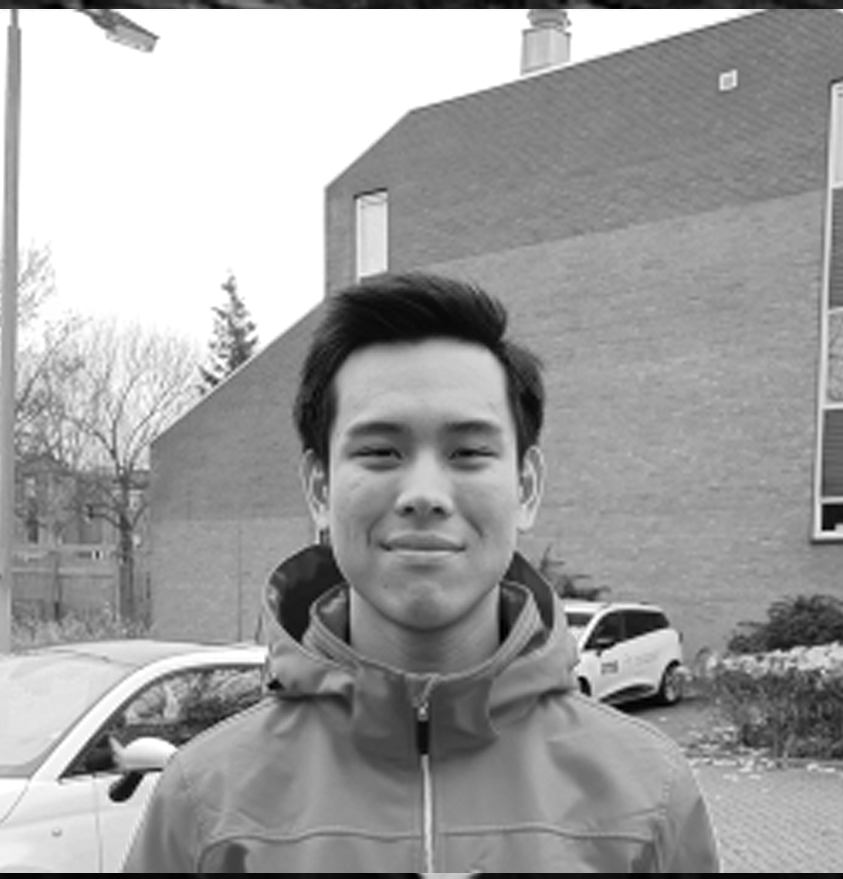

The Dream Team

Alison

Chris
Mark

Jordy

Maosheng

Ian

Stijn

Steven

Camila
To the remarkable collective that is the Winc Team,
Picture this: a fledgling startup humming with dynamic energy, within this setting, began my extraordinary adventure, a journey that has come to mean more to me than the final destination. From the highs of triumphant victories to the lows of challenging hurdles, every moment has been a learning experience, pushing me to evolve and grow.
This journey crafted from countless learnings and insights has nurtured my passion for computers, fueling it with a new sense of purpose and momentum. And this website, it's more than just bytes and pixels - it's a heartfelt homage, a testament to this incredible journey and the incredible people who were part of it.
Alison, your readiness to accept and act upon feedback has deeply moved me. Chris, your unwavering dedication as an educator, your readiness to go the extra mile extending teaching sessions to address all our queries, is... inspiring.
During the React Final project, your guidance, Mark, became my lighthouse in the storm. Jordy, your steadfast support, your willingness to dive into the unknown to assist us, has been invaluable.
Maosheng, your comforting support provided a much-needed boost during the Betsy project. And Ian, our meaningful one-on-one sessions will always remain in my memory, where with your assistance, our enlightening discussions led me to a better understanding.
Stijn, we had limited interactions but you have tailored my growth, your fair grading reflected a commitment to honesty. Steven, your unconventional and challenging approach to mentoring has made me more resilient, more robust.
Finally, Camila, your warmth in all our digital interactions brought familiarity and comfort, your eagerness to resolve my campus and dashboard issues was felt and appreciated.
In summation, a profound and heartfelt thank you to each one of you for your unique and meaningful contributions to my journey. Let's continue to inspire learners and bring joy to education, for that's what makes an extraordinary teacher.
The Dream Team
Alison
Chris
Mark
Jordy
Maosheng
Ian
Stijn
Steven
Camila